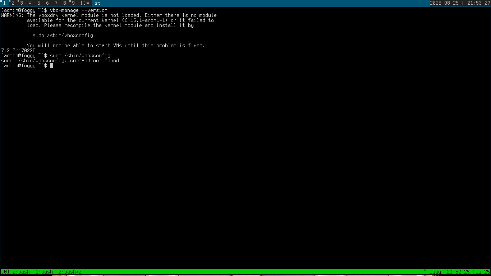
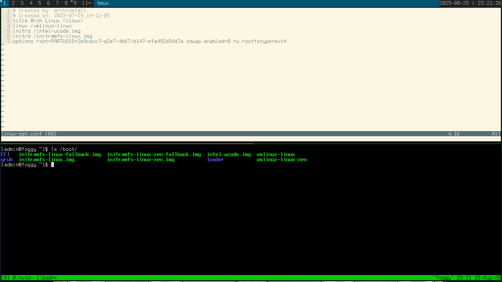
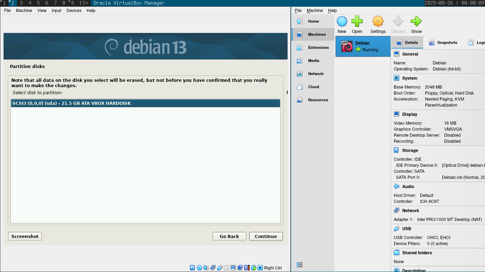

Debianin asennus virtuaalikoneeseen
Raportti
Aloitus 2025-08-25 21:35:00
Host:
OS: Arch Linux x86_64
Kernel:
- Raportin alussa 6.16.1-arch1-1
- Myöhemmin 6.16.3-zen1-1-zen
CPU: Intel i5-7200U
GPU: Intel HD Graphics 620
RAM: 8GB
Virtualbox versio 7.2.0r170228
Levykuva: debian-live-13.0.0-amd64-xfce.iso
Ensimmäinen ongelma
Tarkistaessani Virtualboxin versiota komennolla:
vboxmanage --version
sain varoituksen joka ilmoitti ettei kernel-moduulia ole ladattuna, eikä virtuaalikoneita voida ajaa ilman sitä:
Tarkistin asian Virtualboxin graafisesta liittymästä ja sain samantyylisen varoituksen yrittämällä käynnistää virtuaalikoneen:
Yritin tehdä neuvotulla tavalla ja compilata kernel-moduulin komennolla:
sudo /sbin/vboxconfig
mutta komentoa ei löytynyt
ajoin vielä komennon ilman sudoa:
jonka vastauksena sain ettei kyseistä tiedostoa tai hakemistoa ole olemassa.
Googlasin "sudo: /sbin/vboxconfig: command not found" ja osoitteessa https://bbs.archlinux.org/viewtopic.php?id=278180 käyttäjä Skunktrader on kysynyt samankaltaiseen ongelmaan törmänneeltä käyttäjältä:
"Have you rebooted since upgrading the kernel?
Tämä oli mahdollinen syy ongelmaan joten käynnistin tietokoneen uudelleen noin kello 22:00 mutta ongelmaan ei tullut muutosta.
Kävin katsomassa artikkelia osoitteessa https://wiki.archlinux.org/title/VirtualBox ja artikkelin alussa mainitaan Install the core packages. Minulla oli virtualbox-host-dkms asennettuna ja arvelin että ehkä vika voisi olla tässä, nimittäin minulla oli ymmärtääkseni tavallinen linux-kernel käytössä eikä esim. linux-zen jota tämän dkms-paketin kanssa käytetään.
Pidin pienen pohtimistauon kello 22:18 samalla kun päivitin järjestelmäni komennolla:
sudo pacman -Syu
Pohdin, että voisin kenties vaihtaa kerneliä linux-zeniin joka minulla on valmiiksi asennettuna ja katsoa mitä tapahtuu. Tekemällä tämän voisin myös saada uutta innostusta tekemiseeni, nimittäin kernelin vaihtamista en ole tehnyt aikoihin ja se voikin olla sitten kivaa puuhaa. :)
Huomasin järjestelmäpäivitykseni lokissa kohdan joka viittasi siihen että olisin mahdollisesti oikeilla jäljillä ongelmassa, ainakin näin päättelin päässäni.
Listasin saatavilla olevat kernelit komennolla:
find /boot/vmli*
Linux ja Linux-zen kernelit olivat asennettuina.
Tarkistin vielä nykyisen kernelin komennolla:
uname -r
Käynnistäessäni koneen uudelleen vaihtaakseni kernelin, linux-zen kerneliä ei ollut listattuna GRUBissa. Lähdin selvittämään mistä on kyse.
https://www.reddit.com/r/archlinux/comments/rn43y0/arch_seems_stuck_at_boot/?utm_medium=android_app&utm_source=share Käyttäjä hearthreddit kysyy hieman erilaiseen ongelmaan törmänneeltä:
Did you regenerate your grub config?
Vaikka henkilön ongelma olikin erilainen, kokeilin tätä ehdotettua komentoa:
sudo grub-mkconfig -o /boot/grub/grub.cfg
Mutta komentoa ei löytynyt
Löysin vastauksen sivulta https://bobcares.com/blog/grub-mkconfig-command-not-found/ josta selvisi että saan komennon asentamalla grub-paketin.
Ajoin siis komennon:
pacman -S grub
ja seuraava ongelma johon törmäsin ajaessani komentoa:
sudo grub-mkconfig -o /boot/grub/grub.cfg
olikin seuraavanlainen:
/usr/bin/grub-mkconfig: line 270: /boot/grub/grub.cfg.new: No such file or directory
Tein kyseisellä errorilla haun netissä ja sain seuraavan foorumipostauksen hakutuloksissa:
https://www.linuxquestions.org/questions/arch-29/installation-problem-grub-config-error-no-such-file-or-directory-4175643477/ jossa käyttäjä colorpurple21859 kysyy ja ehdottaa:
does the directory /boot/grub exist? If not create the /boot/grub directory.
Loin siis uuden hakemiston komennolla:
sudo mkdir /boot/grub
joka vaikutti toimineen onnistuneesti.
Käynnistin siis koneeni uudelleen jospa sieltä olisi löytynyt GRUBista linux-zen mutta eipä näkynyt.
Pohdiskelin että tämä johtui mahdollisesti siitä, ettei GRUB käytä sitä config-tiedostoa jonka olin generoinut grub-mkconfig -komennolla. Loin aikaisemmin uuden hakemiston /boot/grub/ ja sinne config-tiedoston grub.cfg, mutta mahdollisesti järjestelmä oli konfiguroitu käyttämään jossakin toisessa sijainnissa olevaa konfigurointi-tiedostoa. Näin siis päättelin ilman varmuutta asiasta.
Lähdin sitten seikkailemaan hakemistoon /boot ja pienen tutkinnan jälkeen huomasin että hakemiston /boot/loader/entries/ sisällä näyttäisi olevan ne vaihtoehdot jotka näen GRUBissa. Linux-zeniä ei siellä näkynyt.
Löysin netistä uuden artikkelin jossa luotiin uusi tiedosto tähän hakemistoon ja otin siitä hieman mallia:
https://dev.to/thekbbohara/how-to-change-update-the-kernel-linux-systemd-boot-baby-2hn9
Loin uuden tiedoston hakemistoon /boot/loader/entries/ kopioimalla toisen hakemistossa olevan tiedoston testiksi komennolla:
sudo cp 2023-07-29_14-12-05_linux.conf linux-zen.conf
Tarkastelin tiedostoa ja sen sisältöä ja vertasin sitä /boot -hakemiston sisältöön:
Vaikka aikaisemmassa artikkelissa oli tarkat ohjeet, ajattelin että pitäisi olla varovainen näitä tiedostoja muokatessa ettei vahingossa rikkoisi jotain. :-)
Vaikutti siltä, että mikään ei menisi rikki jos muuttaisin tämän uuden linux-zen.conf -tiedoston sisältöä seuraavalla tavalla:
Käytännössä lisäsin vain -zen -päätteet tiettyihin kohtiin linux-zen.conf -tiedostossa.
Ajattelin että nyt voitaisiin rebootata kone uudestaan jos GRUBissa näkyisi muutoksia. Kello oli 23:28:00.
Jipii! Linux-zen -kernel näkyi vaihtoehdoissa ja se boottasi ilman ongelmia.
Asiasta kukkaruukkuun, mitään varmuutta ei ollut siitä että tämä korjaisi ongelmani Virtualboxin kernel-moduulin kanssa.
Olin kuitenkin päätellyt oikein, nimittäin avasin heti Virtualboxin ja käynnistin virtuaalikoneen onnistuneesti!
Oli tullut aika asentaa Debian.
Hieman käytin ohjenuorana opettajan ohjetta osoitteessa https://github.com/johannaheinonen/johanna-test-repo/blob/main/linux-20082025.md
Kello oli 23:39
Painoin "New" Virtualboxin graafisesta käyttöliittymästä.
Nimesin Virtuaalikoneen nimellä "Debian" ja valitsin tunnilla lataamani Debian levykuvan ISO Image-kohtaan.
Tässä vaiheessa mietin, pitäisikö käyttää "Proceed with unattended installation" ja jätin sen pois.
Säädin RAM-muistin kahteen gigaan ja CPU yhteen kappaleeseen.
Säädin virtuaalisen kovalevyn koon 20 Gigaan ja painoin "Finish".
Käynnistin virtuaalikoneen ja menin suoraan kohtaan "Start installer", sillä olin tehokkaalla tuulella kaiken tuon kernelihärdellin jäljiltä.
Valitsin kieleksi englannin.
Valitsin sijainniksi Other->Europe->Finland

Valitsin localeksi en-US.UTF-8
Näppäimistön kieleksi valitsin Finnish
Sitten odottelin ja laitoin hostnameksi debian
Verkon domain-nimeksi example.com
Jätin root-salasanan konfiguroimatta.
Kirjoitin nimeni, käyttäjänimeni ja salasanani käyttäjää varten.
Odottelin ja valitsin Partition disks -kohdassa Guided - Use entire disk
Valitsin levyn jota käytetään ja laitoin siihen All files in one partition. Painoin varmistuksissa vielä kyllä kaikkeen että homma lähtisi pyörimään.
Sitten odoteltiin.
Sain vielä ehdotuksen: Install the GRUB boot loader to your primary drive? Painoin kyllä, ei kai siinä muu auttanut vaikka päivän annos GRUBia tuli jo täyteen aikaisemmin tänään. :-)
Valitsin /dev/sda GRUBin sijainniksi.
Asennus valmis.
Kone boottaa ja sisäänkirjautuminen onnistuu! Jee!
Vielä yksi asia. Tahtoisin esitellä lempi Linux-ohjelmani mutta apt-get -komento ei toimi:
Tämän ongelman syy oli ilmeisesti, niin kuin artikkelissa https://github.com/johannaheinonen/johanna-test-repo/blob/main/linux-20082025.md lopussa kerrotaan, sources.list -tiedoston vajavaisuudessa. Kävin lisäämässä sinne tarvittavat tiedot:
sudo vi /etc/apt/sources.list
ja lisättiin seuraavat tiedot:
Noniin. Ajettiin komennot:
sudo apt-get update && sudo apt-get upgrade
ja toimi:

Asensin pikaisesti lempiohjelmani, tmux:in (terminal multiplexerin) ja toisen hyödyllisen ohjelman, htop:in komennolla:
sudo apt install tmux htop
 Käynnistettiin tmux komennolla tmux:
Käynnistettiin tmux komennolla tmux:


Jaettiin terminaali puoliksi painamalla ctrl+b ja %

Sen jälkeen vielä toisessa suunnassa painamalla ctrl+b ja "

Käynnistettiin vielä htop tässä uudessa paneelissa:

htop näytti kamalan pieneltä tässä eikä paljon näkynyt. Painettiin siis ctrl+b ja z sekä suurennettiin terminaaliohjelma koko näytölle:

Valmista 2025-08-26 00:44:00